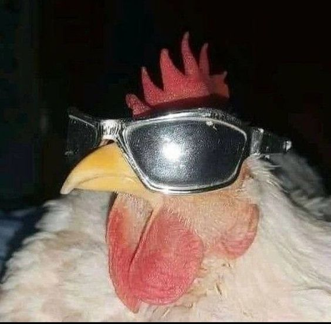

Maicon
Publico
Severino
13 de abril de 2024 às 13:00hsEsses desafios são muito bom, estão me ajundando demais a me enturmar com a galera #ILoveYouSafeSpace
 28
28 5
5 21
21PatoLouco
13 de abril de 2024 às 13:00hsQuem ai ta com mais emblemas que eu?
4618363Psico
13 de abril de 2024 às 13:00hsDesafios são como terapias para a alma: às vezes complicados, mas sempre rendendo boas histórias para contar! Vem enfrentar os desafios da vida conosco e sair rindo no final!
4618363